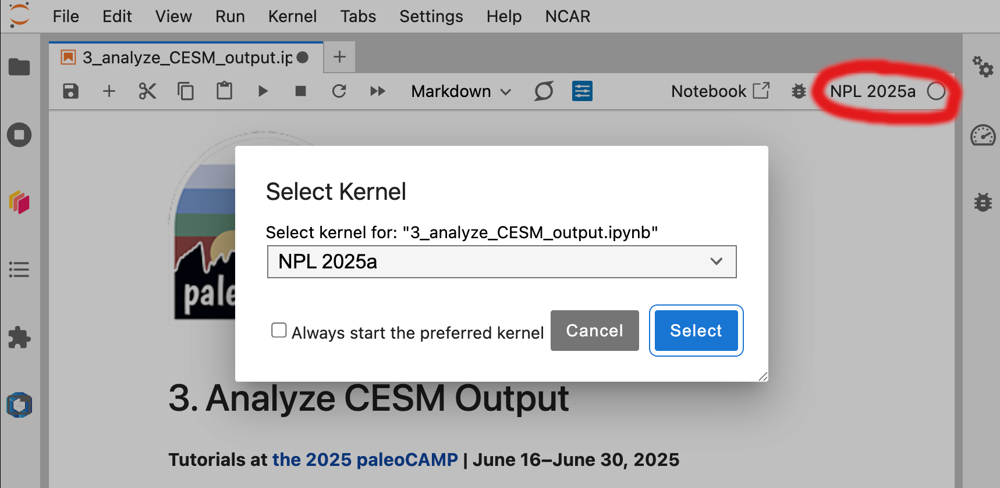

4b. Option 2: Analyze Long MidHolocene simulations#
Tutorials at the 2025 paleoCAMP | June 16–June 30, 2025
Jiang Zhu
jiangzhu@ucar.edu
Climate & Global Dynamics Laboratory
NSF National Center for Atmospheric Research
Learning Objectives:
Use JupyterHub to access and explore available simulation datasets
Evaluate the role of internal climate variability by comparing plots with the one-year simulation in Section
3. Analyze CESM OutputUnderstand how orbital forcing could influence the ITCZ and monsoon precipitation
Understand how green Sahara (vegetation forcing) could influence the ITCZ and precipitation
Time to learn: 60 minutes
How to get started?
Make sure you have an active JupyterHub server
Find and open the notebook
4b_opt2_analyze_long_midHolocenein the left sidebarMake sure to use
NPL 2025aas your Kernel (select from top right corner) 
Figure: Launch a Terminal
Load Python packages
import os
from datetime import timedelta
import xarray as xr
import numpy as np
import matplotlib.pyplot as plt
import cartopy.crs as ccrs
from cartopy.util import add_cyclic_point
Analysis 1: How does orbital forcing impact the ITCZ and monsoon precipitation during the midHolocene?#
We revisit this problem using longer and better equilibrated midHolocene simulation with iCESM1.2
Averaging over longer time (100 years here) helps to remove internal variability
The first step is to figure out the directory structure of the data#
b.e12.B1850C5.f19_g16.iPI.01is a preindustrial control simulation of 900 model yearsb.e12.B1850C5.f19_g16.i06ka.03is a mid-Holocene simulation of 900 years with only the orbital forcingReference for the simulations: Osman et al. 2021
campaign_dir = '/glade/campaign/cgd/ppc/jiangzhu/iCESM1.2'
!ls /glade/campaign/cgd/ppc/jiangzhu/iCESM1.2
b.e12.B1850C5.f19_g16.i03ka.01
b.e12.B1850C5.f19_g16.i06ka.03
b.e12.B1850C5.f19_g16.i06ka.04
b.e12.B1850C5.f19_g16.i09ka.01
b.e12.B1850C5.f19_g16.i12ka.01
b.e12.B1850C5.f19_g16.i12ka.02
b.e12.B1850C5.f19_g16.i12ka_WH025a.01
b.e12.B1850C5.f19_g16.i14ka.01
b.e12.B1850C5.f19_g16.i16ka.01
b.e12.B1850C5.f19_g16.i16ka_WH025a.01
b.e12.B1850C5.f19_g16.i18ka.01
b.e12.B1850C5.f19_g16.i21ka.03
b.e12.B1850C5.f19_g16.i21ka.03.0kaGaI
b.e12.B1850C5.f19_g16.i21ka.03.0kaGHG
b.e12.B1850C5.f19_g16.i21ka.03.0kaICE
b.e12.B1850C5.f19_g16.iPI.01
b.e12.B1850C5.f19_g16.iPI.01.21kaGaI
b.e12.B1850C5.f19_g16.iPI.01.21kaGHG
b.e12.B1850C5.f19_g16.iPI.01.21kaICE
b.e12.B1850C5.f19_g16.iPIx2.01
extra
please_cite_tierney2020_zhu2021_osman2021
case_PI = 'b.e12.B1850C5.f19_g16.iPI.01'
case_MH = 'b.e12.B1850C5.f19_g16.i06ka.03'
# This is the folder structure under each simulation (case)
# This means atmosphere, postprocessed timeseries at monthly frequency
comp = 'atm/proc/tseries/month_1'
print('list piControl precip. files')
!ls /glade/campaign/cgd/ppc/jiangzhu/iCESM1.2/b.e12.B1850C5.f19_g16.iPI.01/atm/proc/tseries/month_1/*PRECC.*
!ls /glade/campaign/cgd/ppc/jiangzhu/iCESM1.2/b.e12.B1850C5.f19_g16.iPI.01/atm/proc/tseries/month_1/*PRECL.*
print('list midHolocene precip. files')
!ls /glade/campaign/cgd/ppc/jiangzhu/iCESM1.2/b.e12.B1850C5.f19_g16.i06ka.03/atm/proc/tseries/month_1/*PRECC.*
!ls /glade/campaign/cgd/ppc/jiangzhu/iCESM1.2/b.e12.B1850C5.f19_g16.i06ka.03/atm/proc/tseries/month_1/*PRECL.*
list piControl precip. files
/glade/campaign/cgd/ppc/jiangzhu/iCESM1.2/b.e12.B1850C5.f19_g16.iPI.01/atm/proc/tseries/month_1/b.e12.B1850C5.f19_g16.iPI.01.cam.h0.PRECC.0001-0900.cal_adj.nc
/glade/campaign/cgd/ppc/jiangzhu/iCESM1.2/b.e12.B1850C5.f19_g16.iPI.01/atm/proc/tseries/month_1/b.e12.B1850C5.f19_g16.iPI.01.cam.h0.PRECC.0001-0900.nc
/glade/campaign/cgd/ppc/jiangzhu/iCESM1.2/b.e12.B1850C5.f19_g16.iPI.01/atm/proc/tseries/month_1/b.e12.B1850C5.f19_g16.iPI.01.cam.h0.PRECL.0001-0900.cal_adj.nc
/glade/campaign/cgd/ppc/jiangzhu/iCESM1.2/b.e12.B1850C5.f19_g16.iPI.01/atm/proc/tseries/month_1/b.e12.B1850C5.f19_g16.iPI.01.cam.h0.PRECL.0001-0900.nc
list midHolocene precip. files
/glade/campaign/cgd/ppc/jiangzhu/iCESM1.2/b.e12.B1850C5.f19_g16.i06ka.03/atm/proc/tseries/month_1/b.e12.B1850C5.f19_g16.i06ka.03.cam.h0.PRECC.0001-0900.cal_adj.nc
/glade/campaign/cgd/ppc/jiangzhu/iCESM1.2/b.e12.B1850C5.f19_g16.i06ka.03/atm/proc/tseries/month_1/b.e12.B1850C5.f19_g16.i06ka.03.cam.h0.PRECC.0001-0900.nc
/glade/campaign/cgd/ppc/jiangzhu/iCESM1.2/b.e12.B1850C5.f19_g16.i06ka.03/atm/proc/tseries/month_1/b.e12.B1850C5.f19_g16.i06ka.03.cam.h0.PRECL.0001-0900.cal_adj.nc
/glade/campaign/cgd/ppc/jiangzhu/iCESM1.2/b.e12.B1850C5.f19_g16.i06ka.03/atm/proc/tseries/month_1/b.e12.B1850C5.f19_g16.i06ka.03.cam.h0.PRECL.0001-0900.nc
NOTE: files with cal_adj mean they have been corrected for the calendar effect (recall Jess’s lecture on orbital forcing)
Create a list of files we need for piControl
# fname_precc = 'b.e12.B1850C5.f19_g16.iPI.01.cam.h0.PRECC.0001-0900.nc'
# fname_precl = 'b.e12.B1850C5.f19_g16.iPI.01.cam.h0.PRECL.0001-0900.nc'
# We use the files with calendar effect adjustments
fname_precc = 'b.e12.B1850C5.f19_g16.iPI.01.cam.h0.PRECC.0001-0900.cal_adj.nc'
fname_precl = 'b.e12.B1850C5.f19_g16.iPI.01.cam.h0.PRECL.0001-0900.cal_adj.nc'
flist_PI = [os.path.join(campaign_dir, case_PI, comp, fname_precc),
os.path.join(campaign_dir, case_PI, comp, fname_precl)]
flist_PI
['/glade/campaign/cgd/ppc/jiangzhu/iCESM1.2/b.e12.B1850C5.f19_g16.iPI.01/atm/proc/tseries/month_1/b.e12.B1850C5.f19_g16.iPI.01.cam.h0.PRECC.0001-0900.cal_adj.nc',
'/glade/campaign/cgd/ppc/jiangzhu/iCESM1.2/b.e12.B1850C5.f19_g16.iPI.01/atm/proc/tseries/month_1/b.e12.B1850C5.f19_g16.iPI.01.cam.h0.PRECL.0001-0900.cal_adj.nc']
Create a list of files we need for midHolocene
# fname_precc = 'b.e12.B1850C5.f19_g16.i06ka.03.cam.h0.PRECC.0001-0900.nc'
# fname_precl = 'b.e12.B1850C5.f19_g16.i06ka.03.cam.h0.PRECL.0001-0900.nc'
# We use the files with calendar effect adjustments
fname_precc = 'b.e12.B1850C5.f19_g16.i06ka.03.cam.h0.PRECC.0001-0900.cal_adj.nc'
fname_precl = 'b.e12.B1850C5.f19_g16.i06ka.03.cam.h0.PRECL.0001-0900.cal_adj.nc'
flist_MH = [os.path.join(campaign_dir, case_MH, comp, fname_precc),
os.path.join(campaign_dir, case_MH, comp, fname_precl)]
flist_MH
['/glade/campaign/cgd/ppc/jiangzhu/iCESM1.2/b.e12.B1850C5.f19_g16.i06ka.03/atm/proc/tseries/month_1/b.e12.B1850C5.f19_g16.i06ka.03.cam.h0.PRECC.0001-0900.cal_adj.nc',
'/glade/campaign/cgd/ppc/jiangzhu/iCESM1.2/b.e12.B1850C5.f19_g16.i06ka.03/atm/proc/tseries/month_1/b.e12.B1850C5.f19_g16.i06ka.03.cam.h0.PRECL.0001-0900.cal_adj.nc']
Read in piControl and midHolocene data#
ds_PI = xr.open_mfdataset(
flist_PI, data_vars='minimal', coords='minimal', compat='override')
# We need this fix to get the correct time, i.e., January to December
ds_PI['time'] = ds_PI.time.get_index('time') - timedelta(days=15)
ds_PI
<xarray.Dataset> Size: 1GB
Dimensions: (lev: 30, ilev: 31, lat: 96, lon: 144, time: 10800, nbnd: 2)
Coordinates:
* lev (lev) float64 240B 3.643 7.595 14.36 24.61 ... 957.5 976.3 992.6
* ilev (ilev) float64 248B 2.255 5.032 10.16 18.56 ... 967.5 985.1 1e+03
* lat (lat) float64 768B -90.0 -88.11 -86.21 ... 86.21 88.11 90.0
* lon (lon) float64 1kB 0.0 2.5 5.0 7.5 ... 350.0 352.5 355.0 357.5
* time (time) object 86kB 0001-01-16 23:08:30.912478 ... 0900-12-16 2...
Dimensions without coordinates: nbnd
Data variables: (12/25)
hyam (lev) float64 240B dask.array<chunksize=(30,), meta=np.ndarray>
hybm (lev) float64 240B dask.array<chunksize=(30,), meta=np.ndarray>
hyai (ilev) float64 248B dask.array<chunksize=(31,), meta=np.ndarray>
hybi (ilev) float64 248B dask.array<chunksize=(31,), meta=np.ndarray>
P0 float64 8B ...
ndbase int32 4B ...
... ...
f11vmr (time) float64 86kB dask.array<chunksize=(10800,), meta=np.ndarray>
f12vmr (time) float64 86kB dask.array<chunksize=(10800,), meta=np.ndarray>
sol_tsi (time) float64 86kB dask.array<chunksize=(10800,), meta=np.ndarray>
nsteph (time) int32 43kB dask.array<chunksize=(10800,), meta=np.ndarray>
PRECC (time, lat, lon) float32 597MB dask.array<chunksize=(10800, 96, 144), meta=np.ndarray>
PRECL (time, lat, lon) float32 597MB dask.array<chunksize=(10800, 96, 144), meta=np.ndarray>
Attributes:
Conventions: CF-1.0
source: CAM
case: b.e12.B1850C5.f19_g16.iPI.01
title: UNSET
logname: jiangzhu
host: r5i1n15
Version: $Name$
revision_Id: $Id$
initial_file: b.ie12.B1850C5CN.f19_g16.09.cam.i.0401-01-01-...
topography_file: /glade/p/cesmdata/cseg/inputdata/atm/cam/topo...
paleo_calendar_adjustment: 2020-07-07 22:40:03 paleo calendar adjustment...Select the last 100 years using
.sel
ds_PI = ds_PI.sel(time=slice('0801', '0900'))
ds_PI
<xarray.Dataset> Size: 133MB
Dimensions: (lev: 30, ilev: 31, lat: 96, lon: 144, time: 1200, nbnd: 2)
Coordinates:
* lev (lev) float64 240B 3.643 7.595 14.36 24.61 ... 957.5 976.3 992.6
* ilev (ilev) float64 248B 2.255 5.032 10.16 18.56 ... 967.5 985.1 1e+03
* lat (lat) float64 768B -90.0 -88.11 -86.21 ... 86.21 88.11 90.0
* lon (lon) float64 1kB 0.0 2.5 5.0 7.5 ... 350.0 352.5 355.0 357.5
* time (time) object 10kB 0801-01-16 23:08:30.912476 ... 0900-12-16 2...
Dimensions without coordinates: nbnd
Data variables: (12/25)
hyam (lev) float64 240B dask.array<chunksize=(30,), meta=np.ndarray>
hybm (lev) float64 240B dask.array<chunksize=(30,), meta=np.ndarray>
hyai (ilev) float64 248B dask.array<chunksize=(31,), meta=np.ndarray>
hybi (ilev) float64 248B dask.array<chunksize=(31,), meta=np.ndarray>
P0 float64 8B ...
ndbase int32 4B ...
... ...
f11vmr (time) float64 10kB dask.array<chunksize=(1200,), meta=np.ndarray>
f12vmr (time) float64 10kB dask.array<chunksize=(1200,), meta=np.ndarray>
sol_tsi (time) float64 10kB dask.array<chunksize=(1200,), meta=np.ndarray>
nsteph (time) int32 5kB dask.array<chunksize=(1200,), meta=np.ndarray>
PRECC (time, lat, lon) float32 66MB dask.array<chunksize=(1200, 96, 144), meta=np.ndarray>
PRECL (time, lat, lon) float32 66MB dask.array<chunksize=(1200, 96, 144), meta=np.ndarray>
Attributes:
Conventions: CF-1.0
source: CAM
case: b.e12.B1850C5.f19_g16.iPI.01
title: UNSET
logname: jiangzhu
host: r5i1n15
Version: $Name$
revision_Id: $Id$
initial_file: b.ie12.B1850C5CN.f19_g16.09.cam.i.0401-01-01-...
topography_file: /glade/p/cesmdata/cseg/inputdata/atm/cam/topo...
paleo_calendar_adjustment: 2020-07-07 22:40:03 paleo calendar adjustment...Repeat for midHolocene
ds_MH = xr.open_mfdataset(
flist_MH, data_vars='minimal', coords='minimal', compat='override')
# We need this fix to get the correct time, i.e., January to December
ds_MH['time'] = ds_MH.time.get_index('time') - timedelta(days=15)
ds_MH = ds_MH.sel(time=slice('0801', '0900'))
ds_MH
<xarray.Dataset> Size: 133MB
Dimensions: (lev: 30, ilev: 31, lat: 96, lon: 144, time: 1200, nbnd: 2)
Coordinates:
* lev (lev) float64 240B 3.643 7.595 14.36 24.61 ... 957.5 976.3 992.6
* ilev (ilev) float64 248B 2.255 5.032 10.16 18.56 ... 967.5 985.1 1e+03
* lat (lat) float64 768B -90.0 -88.11 -86.21 ... 86.21 88.11 90.0
* lon (lon) float64 1kB 0.0 2.5 5.0 7.5 ... 350.0 352.5 355.0 357.5
* time (time) object 10kB 0801-01-14 09:41:24.727500 ... 0900-12-12 2...
Dimensions without coordinates: nbnd
Data variables: (12/25)
hyam (lev) float64 240B dask.array<chunksize=(30,), meta=np.ndarray>
hybm (lev) float64 240B dask.array<chunksize=(30,), meta=np.ndarray>
hyai (ilev) float64 248B dask.array<chunksize=(31,), meta=np.ndarray>
hybi (ilev) float64 248B dask.array<chunksize=(31,), meta=np.ndarray>
P0 float64 8B ...
ndbase int32 4B ...
... ...
f11vmr (time) float64 10kB dask.array<chunksize=(1200,), meta=np.ndarray>
f12vmr (time) float64 10kB dask.array<chunksize=(1200,), meta=np.ndarray>
sol_tsi (time) float64 10kB dask.array<chunksize=(1200,), meta=np.ndarray>
nsteph (time) int32 5kB dask.array<chunksize=(1200,), meta=np.ndarray>
PRECC (time, lat, lon) float32 66MB dask.array<chunksize=(1200, 96, 144), meta=np.ndarray>
PRECL (time, lat, lon) float32 66MB dask.array<chunksize=(1200, 96, 144), meta=np.ndarray>
Attributes:
Conventions: CF-1.0
source: CAM
case: b.e12.B1850C5.f19_g16.i06ka.03
title: UNSET
logname: jiangzhu
host: r3i7n29
Version: $Name$
revision_Id: $Id$
initial_file: /glade/p/cesmdata/cseg/inputdata/atm/cam/inic...
topography_file: /glade/work/jiangzhu/data/inputdata/cesm120ka...
paleo_calendar_adjustment: 2020-07-08 00:15:03 paleo calendar adjustment...Compute the NH summer mean (JJA)#
m_p_s_to_mm_p_day = 86400000
piControl
# Recall Kevin's method to compute JJA mean
ds_PI_JJA = ds_PI.groupby('time.season').mean(dim='time').sel(season='JJA')
prec_PI = (ds_PI_JJA.PRECC + ds_PI_JJA.PRECL) * m_p_s_to_mm_p_day
prec_PI
<xarray.DataArray (lat: 96, lon: 144)> Size: 111kB
dask.array<mul, shape=(96, 144), dtype=float64, chunksize=(96, 144), chunktype=numpy.ndarray>
Coordinates:
* lat (lat) float64 768B -90.0 -88.11 -86.21 -84.32 ... 86.21 88.11 90.0
* lon (lon) float64 1kB 0.0 2.5 5.0 7.5 10.0 ... 350.0 352.5 355.0 357.5
season <U3 12B 'JJA'Task 1: Add your code for midHolocene using
ds_MH
Click here for the solution
Copy and paste the code into the above cell
ds_MH_JJA = ds_MH.groupby('time.season').mean(dim='time').sel(season='JJA')
prec_MH = (ds_MH_JJA.PRECC + ds_MH_JJA.PRECL) * m_p_s_to_mm_p_day
prec_MH
Plot JJA precipitation for piControl, midHolocene, and the difference between them#
I have an example on how to plot the JJA mean precipitation from piControl
Task 2: Add your own code below to plot that for midHolocene
Task 3: Add your own code below to plot the anomaly (midHolocene - piControl)
# One big figure with three horizontal panels
fig, axes = plt.subplots(1, 3, figsize=(9, 3), subplot_kw={
'projection': ccrs.Robinson(central_longitude=210)})
# Use the first subplot for piControl
ax0 = axes[0]
# Add cyclic point first
prec_PI_new, lon_new = add_cyclic_point(prec_PI, prec_PI.lon)
p0 = ax0.contourf(lon_new, prec_PI.lat, prec_PI_new,
cmap='YlGnBu',
levels=np.linspace(0, 17, 18),
extend='both',
transform=ccrs.PlateCarree())
plt.colorbar(p0, orientation='horizontal', pad=0.03)
ax0.set_title("PI precip. (JJA)")
# Use the second subplot for midHolocene
ax1 = axes[1]
# Use the third subplot for midHolocene - piControl
ax2 = axes[2]
# Loop over subplots to add coastlines
for ax in axes:
ax.coastlines(linewidth=0.5)
/glade/u/apps/opt/conda/envs/npl-2025a/lib/python3.12/site-packages/dask/config.py:787: FutureWarning: Dask configuration key 'allowed-failures' has been deprecated; please use 'distributed.scheduler.allowed-failures' instead
warnings.warn(
Click here for the solution
Copy and paste the code into the above cell
prec_MH_new, lon_new = add_cyclic_point(prec_MH, prec_MH.lon)
p1 = ax1.contourf(lon_new, prec_MH.lat, prec_MH_new,
cmap='YlGnBu',
levels=np.linspace(0, 17, 18),
extend='both',
transform=ccrs.PlateCarree())
plt.colorbar(p1, orientation='horizontal', pad=0.03)
ax1.set_title("MH precip. (JJA)")
prec_ano_new = prec_MH_new - prec_PI_new
p2 = ax2.contourf(lon_new, prec_MH.lat, prec_ano_new,
cmap='BrBG',
levels=np.linspace(-5, 5, 21),
extend='both',
transform=ccrs.PlateCarree())
plt.colorbar(p2, orientation='horizontal', pad=0.03)
ax2.set_title("MH - PI precip. (JJA)")
Discussion#
How does the ITCZ change in iCESM1.2 in response to the mid-Holocene orbital forcing?
How does this new results compare with our previous one-year simulation?
Ask Kathleen, Jane, Daniel, and Kevin about ITCZ and monsoon!
Analysis 2: What if we have a green Sahara?#
Paleoclimate evidence suggests a much greener Sahara during the midHolocene than the present. Read Jess’s introduction to the African Humid Periods.
iCESM1.2 cannot predict vegetation change, i.e., not a complete “Earth System Model”.
Jiang performed an additional midHolocene simulation of 400 years with a prescribed green Sahara with much more vegetation (
b.e12.B1850C5.f19_g16.i06ka.04, in contrast toi06ka.03that has a preindustrial “desert” Sahara).Remeber that prescribing more vegetation is just a simple way to explore the potential effects of a green Sahara.
Figure out the file directory and create list of files#
case_MHGS = 'b.e12.B1850C5.f19_g16.i06ka.04'
print('list midHoloceneGreenSahara files')
!ls /glade/campaign/cgd/ppc/jiangzhu/iCESM1.2/b.e12.B1850C5.f19_g16.i06ka.04/atm/proc/tseries/month_1/*PRECC.*
!ls /glade/campaign/cgd/ppc/jiangzhu/iCESM1.2/b.e12.B1850C5.f19_g16.i06ka.04/atm/proc/tseries/month_1/*PRECL.*
list midHoloceneGreenSahara files
/glade/campaign/cgd/ppc/jiangzhu/iCESM1.2/b.e12.B1850C5.f19_g16.i06ka.04/atm/proc/tseries/month_1/b.e12.B1850C5.f19_g16.i06ka.04.cam.h0.PRECC.0001-0400.cal_adj.nc
/glade/campaign/cgd/ppc/jiangzhu/iCESM1.2/b.e12.B1850C5.f19_g16.i06ka.04/atm/proc/tseries/month_1/b.e12.B1850C5.f19_g16.i06ka.04.cam.h0.PRECC.0001-0400.nc
/glade/campaign/cgd/ppc/jiangzhu/iCESM1.2/b.e12.B1850C5.f19_g16.i06ka.04/atm/proc/tseries/month_1/b.e12.B1850C5.f19_g16.i06ka.04.cam.h0.PRECL.0001-0400.cal_adj.nc
/glade/campaign/cgd/ppc/jiangzhu/iCESM1.2/b.e12.B1850C5.f19_g16.i06ka.04/atm/proc/tseries/month_1/b.e12.B1850C5.f19_g16.i06ka.04.cam.h0.PRECL.0001-0400.nc
# fname_precc = 'b.e12.B1850C5.f19_g16.i06ka.04.cam.h0.PRECC.0001-0400.nc'
# fname_precl = 'b.e12.B1850C5.f19_g16.i06ka.04.cam.h0.PRECL.0001-0400.nc'
# We use the files with calendar effect adjustments
fname_precc = 'b.e12.B1850C5.f19_g16.i06ka.04.cam.h0.PRECC.0001-0400.cal_adj.nc'
fname_precl = 'b.e12.B1850C5.f19_g16.i06ka.04.cam.h0.PRECL.0001-0400.cal_adj.nc'
flist_MHGS = [os.path.join(campaign_dir, case_MHGS, comp, fname_precc),
os.path.join(campaign_dir, case_MHGS, comp, fname_precl)]
flist_MHGS
['/glade/campaign/cgd/ppc/jiangzhu/iCESM1.2/b.e12.B1850C5.f19_g16.i06ka.04/atm/proc/tseries/month_1/b.e12.B1850C5.f19_g16.i06ka.04.cam.h0.PRECC.0001-0400.cal_adj.nc',
'/glade/campaign/cgd/ppc/jiangzhu/iCESM1.2/b.e12.B1850C5.f19_g16.i06ka.04/atm/proc/tseries/month_1/b.e12.B1850C5.f19_g16.i06ka.04.cam.h0.PRECL.0001-0400.cal_adj.nc']
Read in new midHolocene simulaiton with a green Sahara#
ds_MHGS = xr.open_mfdataset(
flist_MHGS, data_vars='minimal', coords='minimal', compat='override')
# We need this fix to get the correct time, i.e., January to December of year 1
ds_MHGS['time'] = ds_MHGS.time.get_index('time') - timedelta(days=15)
# Select the last 100 years
ds_MHGS = ds_MHGS.sel(time=slice('0301', '0400'))
ds_MHGS
<xarray.Dataset> Size: 133MB
Dimensions: (lev: 30, ilev: 31, lat: 96, lon: 144, time: 1200, nbnd: 2)
Coordinates:
* lev (lev) float64 240B 3.643 7.595 14.36 24.61 ... 957.5 976.3 992.6
* ilev (ilev) float64 248B 2.255 5.032 10.16 18.56 ... 967.5 985.1 1e+03
* lat (lat) float64 768B -90.0 -88.11 -86.21 ... 86.21 88.11 90.0
* lon (lon) float64 1kB 0.0 2.5 5.0 7.5 ... 350.0 352.5 355.0 357.5
* time (time) object 10kB 0301-01-14 09:41:24.727502 ... 0400-12-12 2...
Dimensions without coordinates: nbnd
Data variables: (12/25)
hyam (lev) float64 240B dask.array<chunksize=(30,), meta=np.ndarray>
hybm (lev) float64 240B dask.array<chunksize=(30,), meta=np.ndarray>
hyai (ilev) float64 248B dask.array<chunksize=(31,), meta=np.ndarray>
hybi (ilev) float64 248B dask.array<chunksize=(31,), meta=np.ndarray>
P0 float64 8B ...
ndbase int32 4B ...
... ...
f11vmr (time) float64 10kB dask.array<chunksize=(1200,), meta=np.ndarray>
f12vmr (time) float64 10kB dask.array<chunksize=(1200,), meta=np.ndarray>
sol_tsi (time) float64 10kB dask.array<chunksize=(1200,), meta=np.ndarray>
nsteph (time) int32 5kB dask.array<chunksize=(1200,), meta=np.ndarray>
PRECC (time, lat, lon) float32 66MB dask.array<chunksize=(1200, 96, 144), meta=np.ndarray>
PRECL (time, lat, lon) float32 66MB dask.array<chunksize=(1200, 96, 144), meta=np.ndarray>
Attributes:
Conventions: CF-1.0
source: CAM
case: b.e12.B1850C5.f19_g16.i06ka.04
title: UNSET
logname: jiangzhu
host: r2i0n29
Version: $Name$
revision_Id: $Id$
initial_file: b.e12.B1850C5.f19_g16.i06ka.03.cam.i.0901-01-...
topography_file: /glade/work/jiangzhu/data/inputdata/cesm120ka...
paleo_calendar_adjustment: 2020-09-29 01:04:27 paleo calendar adjustment...Compute the NH summer mean (JJA) of the last 100 years#
ds_MHGS_JJA = ds_MHGS.groupby('time.season').mean(dim='time').sel(season='JJA')
prec_MHGS = (ds_MHGS_JJA.PRECC + ds_MHGS_JJA.PRECL) * m_p_s_to_mm_p_day
prec_MHGS
<xarray.DataArray (lat: 96, lon: 144)> Size: 111kB
dask.array<mul, shape=(96, 144), dtype=float64, chunksize=(96, 144), chunktype=numpy.ndarray>
Coordinates:
* lat (lat) float64 768B -90.0 -88.11 -86.21 -84.32 ... 86.21 88.11 90.0
* lon (lon) float64 1kB 0.0 2.5 5.0 7.5 10.0 ... 350.0 352.5 355.0 357.5
season <U3 12B 'JJA'fig, axes = plt.subplots(1, 3, figsize=(9, 3), subplot_kw={
'projection': ccrs.Robinson(central_longitude=210)})
# Use the first subplot for response to orbital forcing (PREC_MH - PREC_PI)
ax0 = axes[0]
# Use the second subplot for response to vegetation forcing (PREC_MHGS - PREC_MH)
ax1 = axes[1]
# Use the third subplot for response to combined forcings (PREC_MHGS - PREC_PI)
ax2 = axes[2]
for ax in axes:
ax.coastlines(linewidth=0.5)
Click here for the solution
Copy and paste the code into the above cell
# Use the first subplot for response to orbital forcing
ax0 = axes[0]
prec_MH_ano = prec_MH_new - prec_PI_new
p0 = ax0.contourf(lon_new, prec_MH.lat, prec_MH_ano,
cmap='BrBG',
levels=np.linspace(-5, 5, 21),
extend='both',
transform=ccrs.PlateCarree())
plt.colorbar(p0, orientation='horizontal', pad=0.03)
ax0.set_title("ORB forced: MH - PI")
# Use the second subplot for response to vegetation forcing
ax1 = axes[1]
prec_MHGS_new, lon_new = add_cyclic_point(prec_MHGS, prec_MHGS.lon)
prec_MHGS_ano = prec_MHGS_new - prec_MH_new
p1 = ax1.contourf(lon_new, prec_MH.lat, prec_MHGS_ano,
cmap='BrBG',
levels=np.linspace(-5, 5, 21),
extend='both',
transform=ccrs.PlateCarree())
plt.colorbar(p1, orientation='horizontal', pad=0.03)
ax1.set_title("VEG forced: MHGS - MH")
# Use the third subplot for response to combined forcings
ax2 = axes[2]
prec_MHGS_ano2 = prec_MHGS_new - prec_PI_new
p2 = ax2.contourf(lon_new, prec_MH.lat, prec_MHGS_ano2,
cmap='BrBG',
levels=np.linspace(-5, 5, 21),
extend='both',
transform=ccrs.PlateCarree())
plt.colorbar(p2, orientation='horizontal', pad=0.03)
ax2.set_title("ORB + VEG forced: MHGS - PI")
Small group discussion#
How does the vegetation forcing over the Sahara impact the local precipitation?
Does the vegetation forcing impact the ITCZ?
Does the vegetation forcing impact the Walker Circulation?
What do you see in the ORB-VEG combined response?
Summary so far#
We need longer simulations to allow the modeled climate state to reach equilibrium.
Longer simulations also allows robust signal by removing internal variability.
Both orbital and vegetation forcings impact atmosphere circulation, precipitation, and other climate states.
Optional#
Write your own code to explore the calendar effect by comparing files with and without
cal_adj